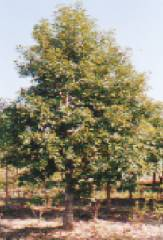
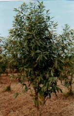
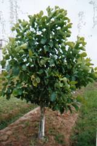
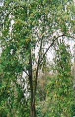

Host Plant
Som, Persea bombycina Kost
and Soalu, Litsaea polyantha Juss are the primary
food plants of Muga silkworm, Antherea assamensis.
In addition, this silkworm also feeds on the leaves of several secondary food
plants as listed below.
|
No
|
Scientific Name
|
Vernacular
Name
|
Family
|
Distribution
|
|
1
|
Persea bombycina Kost
(=Machilus bombycina King)
|
Som
|
Lauraceae
|
Prevalent throughout NE India up to an altitude
of 1500¢ AMSL. Lower Himalayas extending from Garowal to Nepal.
|
|
2
|
Litsaea polyantha Juss
(=monopetala)
|
Sualu
|
Lauraceae
|
Extending northward from Punjab up to salt range along
the foothills of Himalayas ascending to 3000¢ AMSL, eastward to NE India and southward to Satpura hill range. Prevalent throughout Assam, Meghalaya, Mizoram and Nagaland. Common in plains of N.E.India
|
|
3
|
Litsaea salicifolia
|
Dighloti
|
Lauraceae
|
Distributed throughout NE India, Sikkim, Nepal
ascending up to an altitude of 6000¢ AMSL.
|
|
4
|
Litsaea citrata
|
|
Lauraceae
|
Eastern Himalayas covering Sikkim to Arunachal Pradesh,
Assam, Manipur, Meghalaya and Naga
hills up to an altitude of 6000¢ AMSL.
|
|
5
|
Cinnamomum glaucescans
|
Gandhsarai
|
Lauraceae
|
Distributed throughout North East India.
|
|
6
|
Actinodaphnae obovata
|
Patihonda
|
Lauraceae
|
Common tree in N.E. India. Found in Sikkim and Bangladesh.
|
|
7
|
Zizyphus zuzuba
|
Bogori
|
Rhamnaceae
|
Common throughout India, Afghanistan, Malaya, China, Australia.
|
|
8
|
Michelia champaca,
|
Champa
|
Magnoliaceae
|
Tropical Himalayan forest from Nepal to Assam, Meghalaya, Bangladesh and Burma.
|
|
9
|
Magnolia sphenocarpa
|
Panchapa
|
Magnoliaceae
|
Tropical Himalayan forest from Nepal to Assam, Meghalaya, Bangladesh and Burma.
|
|
10
|
Xanthozylum rehsta
|
Bajramani
|
Rutaceae
|
Prevalent throughout N.E. India.
|
|
11
|
Gmelia arborea
|
Gamari
|
Verbanaceae
|
Prevalent throughout NE India in hills &
plains.
|
|
12
|
Celastrus momosperma
|
Bhomloti
|
Celastraceae
|
Common in
Arunachal Pradesh, Assam, Nagaland and Meghalaya.
|
|
13
|
Actinodaphnae anquistifolia
|
Baghnala
|
Lauraceae
|
Prevalent throughout N.E. India.
|
|
14
|
Cinnamomum glanduliferum
|
Gansarai
|
Lauraceae
|
Distributed throughout North East India.
|
Source: Thangavelu et. el., 1988 &
Handbook of muga culture,
published by CSB, Bangalore
Brief description of food
plants:
|

|

|

|

|
|
Som
|
Dighloti
|
Soalu
|
Mejankari
|
1. Som , Persea bombycina, Kost Family : Lauraceae
·
Principal forest based host plant for
muga silkworm.
·
Naturally distributed all over Assam.
·
More abundance in the upper Brahmaputra valley of Assam.
·
Erect and semi-deciduous in nature.
·
Propagation is mostly by seed.
·
Clonal propagation is also possible.
·
Two times pruning/year ensures higher
yield of better
quality leaf with uniform maturity.
2. Sualu,
Litsea polyantha Juss Family: Lauraceae.
·
Erect, semi to full deciduous tree in
nature.
·
Distributed throughout N.E. India up to 3000 m AMSL.
·
Abundantly found in Lower Assam and Meghalaya.
·
Propagation is mostly by seed.
·
Pruning two times/year yield
quantitatively and qualitatively better leaf with uniform maturity.
3. Majankari,
Litsaea citrata Family: Lauraceae.
·
Erect, delicate, evergreen tree of
pleasant fragrance.
·
Full grown plants attain height of
about 8-10 metres.
·
Grows well in shady environment.
·
Propagation is easy through seed.
·
Clonal propagation is also possible.
·
Yield glossy silvery white silk.
·
The tree has medicinal value.
·
Aromatic perfume can be extracted
from leaf and seed.
·
Mejankari silk is called majestic silk as it was patronized by Ahom kings.
4. Dighloti (Litsaea salicifolia Roxb.) Familty: Lauraceae.
·
Dighloti is distributed in a stray in the strubby
jungles of upper Assam.
·
It is also a host plant for a number of other
wild silkworm.
·
It has been distributed in plains as
well as in hills up to an elevation of 1500 m. AMSL.
·
The leaf is variables in shape from
elliptic to linear lanceolate.
·
The fruit is dark purple, narrowly
elliptic 1 cm. long and seated on a funnel or club-shaped perianth,
which is more narrower than the front.
·
Propagation is by means of seed.
PACKAGE
OF PRACTICES OF MUGA HOST (SOM & SOALU) CULTIVATION
1.
Propagation of muga host plant:
Ø Through Seed: Nursery
technique for raising som seedlings has been
standardized. Sowing of Cerasen treated som seeds in 1:1:1 sand , soil,
FYM gives more than 80% germination and 90% post transplantation survival. Som seed above 0.3 g in weight and 7 mm in diameter,
treated with Ceresan @ 2 g/ kg seed and soaked for
24 hours in water before sowing and sown at 1 cm depth and 15 cm apart and
covered with thin layer of thatch grass gives 88% germination in 30-45 days
against 45% germination in traditional method (Ram and Das,
1987). In Soalu, the germination has been recorded
72% in improved method as compared to 41% in traditional method.
Ø Through vegetative means:
With the increasing demand of true to type suitable varieties and also for
optimizing biomass production, importance of vegetative propagation was felt.
Ø Through single leaf and shoot bud cutting : Leaf bud cutting are taken from the apical
portion of tender shoot having a small piece of branch about 4 cm. long with
only one node and a leaf. About 3 cm of the cutting are inserted
into the rooting medium consisting of clean river sand in polythene tube
(22x15cm.). The polythene tubes were arranged in pits measuring 2x1x0.5 m
under a thatched shed to provide shade to the cutting. Watering is done
regularly during day time to restore a high moisture
inside the pit, covered with a polythene sheet for 23 hours a day and
continued for a period of about 2 months. Nearly 60% rooting takes place
after 55-60 days with 90% post transplantation survival.
Ø Through Juvenile shoot cuttings: Juvenile shoot cuttings are prepared from
30-40 days sprouted shoots from basal portion along with some trunk bark
tissues of the pollarded / pruned plants. Such cuttings are treated with 0.1
% Bavistin by
dipping in solution for 2 minutes. The juvenile cuttings are inserted
for about 3-4 cm in the rooting medium. Watering is done regularly during
daytime to restore a high amount of
moisture inside the pit. Initiation of rooting takes place about 30-40 days with maximum
rooting.
Ø Air Layering : Usually 1-2 year old shoot of 4-5 years old plants are more suitable
for air layering. The leaves are removed from the base of the shoot to be
layered and then a ring of bark about 2-3 cm wide is removed without damaging
the cambium. The cut surface is treated with 500 ppm
IBA for further improvement in rooting. The cut portion is then covered with
the handful of wet saw dust soaked in water for 24 hours and wrapped in a
polythene sheet. The ends are then tied. Rooting takes place within 50-60
days in Som and 40-50 days in Soalu.
By this method, 81% and 85% rooting were recorded respectively in Som and Soalu.
2.
Cultivation and management of muga host plant :
Ø
Cultivation of Muga host plant : Generally the muga silkworms are reared by the
rearers on unorganized tall Som and Soalu trees and due to the lack of proper plantation
technique, Som and Soalu
plants show long gestation period. Hence, to overcome these problems and also
to have quality foliage, a technique has been evolved for systematic
plantation for Som under closer spacing. Well drained
high land is suitable for raising muga host plant. The land is deeply
ploughed and then 1x1x1 feet pits are prepared at 3x3 m spacing. The best
season of plantation is May-June. The seedlings become ready after 6 months.
About 6 to 10 month old seedlings are to be transplanted into the pits filled
with soil mixture prepared by mixing sand, soil and FYM in the ratio of
1:1:1, besides 5-10 g 10% Aldrin dust to prevent
termite and ant attack. Plantation at 3x3 m spacing can accommodate 1200 plants per hectare as
against 156 plants under 8x8 m spacing under traditional
practice at farm and rearers'
level. The technology on Muga food plant cultivation has been adopted widely
throughout the North-East and West Bengal.
Ø
Management of Muga host plant: Quality cocoon
production is largely dependent on availability of quality foliage. Proper
management of muga host plant during cultivation yields more production of
quality leaves. Plant management package evolved are discussed below:
Ø
Application of FYM : Plant nutrients improve
texture of soil, increase water retention capacity besides multiplication of
microbes in the soil. The FYM should be applied by making 6-8 inches deep
ring around 2 ft. circumference of a plant @ 0.5 cft
/ plant up to 4th year and 1.0 cft from
4th year onward The application of 1 cft
FYM / year yielded 48% more leaf as compared to control.
Ø
Application of NPK: Increased supply of nitrogen
increases the crude protein percentage and improves the quality of leaf.
Potash and phosphorus increase utilization of nitrogen resulting in increased
production of quality foliage. Application of N:P:K
@50:25:25 up to 4th year of plantation and @100:50:50 from 4th
year onward is done through ring method during February- March and September- October.
Application of 100:50:50 kg NPK per hectare per year has been found to yield
66% more leaf as compared to traditional practices, where the plants are
deprived of these inputs.
3.
Intercropping during gestation period
of Muga host plants :
Ø
Upper Assam : To generate additional income from
muga culture, suitable intercrops can be raised in the first two years of
plantation without any adverse affect on growth of som
plants. Intercrops such as corm in summer and potato (return per acre: Rs. 2379/- to Rs. 6757/-
respectively under 2x2 and 3x3 m spacing) and tomato (return per acre : Rs.3826/- to 4382/- respectively under 2x2 and 3x3
m spacing) in winter have been found
to give highest return under upper Assam conditions.
Ø
Lower Assam: Cultivation of intercrops
viz. local vegetables like Lady's finger, Brinjal
etc. in som gardens during gestation period
improves soil condition and generates additional income from land under
utilization for som and soalu
plantation. Cultural operations carried out for intercropping facilitates
growth of the main crop. Further, a farmer can earn Rs.
4000/- to 5000/- per annum from intercropping with enhanced productivity per
unit area.
4.
Cultural practices :
Ø
Pruning: Pruning schedule for Som to obtain quality foliage for six different crops for
Muga has been evolved. Plants pruned during summer become ready for early and
late age rearing after 3- 4 months and after 4-5 months in winter pruned
plants.
Ø Pollarding: Pollarding at height of 1.5 m above the ground level in Soalu and 2 m in Som at the age
of 7 years has been found ideal in March-April and September-October.
Ø Weed Management: Weeds are unwanted plants. Maximum density of weeds 948 per sq.
m was found in July and minimum 291 per sq. m during February-March. Common
serious weeds in Som and Soalu plantation are
Imperata cylindrica, Saccharum spontaneum and
Borreria sp. Manual eradication is the best
way to control weed population. Intercropping between Som
and Soalu plantation also controls the weeds, provides
additional income, ameliorates soil conditions and helps in growth of main
plant because of regular cultural operations. The application of weedicide, Glyphosate (41%) @
1.6 litre in 180 litre water during sunny days with 6 hours post
application exposure is found effective in controlling particularly thatch
grass in Som and Soalu
plantation.
Top
|